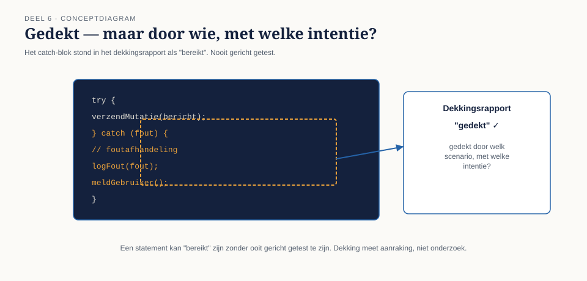
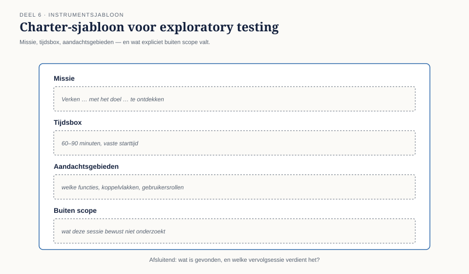
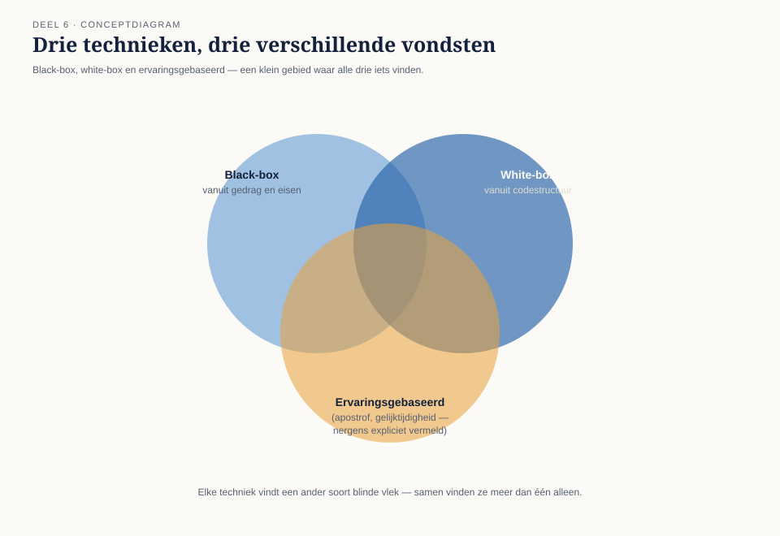

Cursus Testen en Kwaliteitsborging · Niveau 1 (ISTQB CTFL) · Deel 6 van 30
White-box en ervaringsgebaseerd testen
94% statementdekking, en toch een catch-blok dat nog nooit gericht is getest — dat is het raadsel waarmee dit deel begint. U leert het verschil tussen statement- en beslissingsdekking, waarom een dekkingspercentage aanraking meet en geen onderzoek, en hoe exploratory testing en error guessing als gestructureerde technieken precies vinden wat black-box en white-box structureel missen.
7secties
±1,5uleestijd + werkboek
6controlevragen
0bevinding gesloten — bereidt T2 voor
Positionering. Deze cursus is een voorbereiding op het examen ISTQB Certified Tester Foundation Level (CTFL) en uitdrukkelijk geen vervanging van het officiële ISTQB-syllabusmateriaal, te raadplegen via istqb.org. Alle formuleringen, figuren en werkvormen in dit materiaal zijn van Ductus; studeer voor het examen altijd óók de officiële bron.
Niveau 1: ➊ Waarom getest wordt → ➋ Het testproces → ➌ Testen in de levenscyclus → ➍ Statisch testen → ➎ Black-boxtechnieken → ➏ White-box en ervaringsgebaseerd testen (hier) → ➐ Risicogebaseerd testen → ➑ Uitvoeren en bevindingen → ➒ Rapporteren en gereedschap → ➓ Examentraining + capstone
01
Honderd procent en toch fout
⏱ 10 min
Na dit deel kunt u het verschil tussen black-box- en white-boxtechnieken uitleggen vanuit het gebruikte perspectief, statement- en beslissingsdekking toepassen en berekenen, en verwoorden wat een dekkingspercentage wel en niet zegt over kwaliteit. U kunt exploratory testing toepassen als gestructureerde — geen ongestructureerde — activiteit, error guessing toepassen met een checklist van veelvoorkomende foutcategorieën, en een gefundeerde techniekkeuze maken voor een gegeven testsituatie. Dit deel sluit geen eigen bevinding uit T1–T8, maar levert het instrumentarium waarmee deel 7 (risicogebaseerd testen, sluit T2) de resterende testinspanning verdeelt.
Bij de reconstructie na de storing liet Jelle Bakker de dekkingsrapportage van de unit tests voor de mutatieverwerkingsmodule zien: 94% statementdekking. Een keurig getal, ruim boven de meeste interne normen. Iris vroeg door: welke van die statements maakten deel uit van de foutafhandeling rond een mislukte doorzending naar de kernadministratie?
Het antwoord kostte Jelle een halfuur uitzoeken. De foutafhandelingscode bestond — er stond een catch-blok — maar geen enkele test riep het ooit daadwerkelijk aan. Het blok werd bij de dekkingsmeting meegeteld als "bereikt", omdat de regel er stond en ooit, ergens in een andere test, terloops werd gepasseerd tijdens het opzetten van een ander scenario. Nooit gericht getest. Nooit met een falende doorzending als uitgangspunt.

Figuur 6-1 — Het catch-blok, gemarkeerd als "gedekt" in het dekkingsrapport, met daarnaast de vraag: gedekt door welk scenario, met welke intentie?
Kernzin
Een statement kan "bereikt" zijn zonder ooit gericht getest te zijn. Dekking meet aanraking, niet onderzoek.
Dit deel behandelt white-boxtechnieken, die precies dit soort blinde vlekken zichtbaar maken — én ervaringsgebaseerde technieken, die weer een ander soort blinde vlek vinden.
02
Wat white-boxtechnieken zijn
⏱ 18 min
Waar black-boxtechnieken (deel 5) vertrekken vanuit gedrag en eisen, vertrekken white-boxtechnieken vanuit de interne structuur: de code, de paden erdoorheen, de voorwaarden die bepalen welk pad wordt gevolgd.
Dit is geen vervanging van black-boxtechnieken maar een aanvulling met een ander soort blinde vlek: black-box vindt "dit gedrag is nooit getoetst tegen de eis", white-box vindt "dit codepad is nooit doorlopen, ongeacht wat de eis zegt". Beide missen soms hetzelfde probleem vanuit een andere hoek, en soms vinden ze iets wat de ander niet kan zien.
Statementdekking
Het percentage regels code (statements) dat minstens één keer is uitgevoerd tijdens het testen.
Figuur 6-2 — Een eenvoudig codefragment met vijf statements, waarvan er bij een gegeven testset drie zijn geraakt — 60% statementdekking.
Beslissings-/takdekking
Het percentage mogelijke uitkomsten van elke beslissing (elke if, elke switch-tak, elke lusvoorwaarde) dat minstens één keer is doorlopen — dus zowel de ware als de onware uitkomst van elke conditie.
Takdekking is een strenger criterium dan statementdekking: 100% takdekking impliceert altijd 100% statementdekking, maar niet omgekeerd. Een if-statement met alleen een "waar"-tak die ooit is getest, telt voor statementdekking als bereikt, ook als de "onwaar"-tak — vaak precies de foutafhandeling — nooit is doorlopen.
Wat het meet
Wat het mist
Statementdekking
is deze regel ooit uitgevoerd?
welke voorwaarde ernaartoe leidde
Beslissingsdekking
zijn beide uitkomsten van elke beslissing beproefd?
combinaties van meerdere voorwaarden tegelijk
Figuur 6-3 — Hetzelfde codefragment met een if-statement: 100% statementdekking is haalbaar terwijl de "onwaar"-tak nooit wordt geraakt.
Wat een percentage wel en niet zegt
Een hoog dekkingspercentage toont aan dát code is uitgevoerd. Het toont niet aan dát de uitkomst is gecontroleerd tegen wat correct is — een test kan een pad doorlopen zonder een zinvolle bewering (assertion) over het resultaat te doen, en telt dan alsnog mee voor dekking. Dit is de exacte herhaling van principe 1 uit deel 1 (aanwezigheid, niet afwezigheid), nu toegepast op code in plaats van op systeemgedrag.
Kernzin
100% dekking bewijst dat elke regel is aangeraakt. Het bewijst niets over wat er gebeurde toen zij werd aangeraakt.
Dekking is daarom een noodzakelijke, niet-voldoende indicator: lage dekking wijst betrouwbaar op onderbeproefde code; hoge dekking garandeert geen kwaliteit.
Controlevragen
Uit Werkboek deel 6, Opdracht 6.1 en 6.2
1Twee testgevallen zijn uitgevoerd op de deeltijdregelverwerking uit het werkboek (11 regels): A (percentage 0,8, ingangsdatum vandaag) en B (percentage 1,5, ingangsdatum vandaag). Welke regels zijn samen aangeraakt, wat is het statementdekkingspercentage, en welke beslissing is nog niet in beide richtingen getest?Toon antwoord
Samen aangeraakt: regels 1, 2, 3, 4, 9, 10, 11 — 7 van de 11 regels, ofwel 64% statementdekking. Regel 5 ("ingangsdatum in het verleden") is nooit bereikt, dus ook regel 6, 7 en 8 niet — geen van beide testgevallen had een ingangsdatum in het verleden. Minimaal twee aanvullende testgevallen zijn nodig voor 100% beslissingsdekking: één met een ingangsdatum in het verleden binnen 24 maanden, en één met een ingangsdatum meer dan 24 maanden terug. De oorspronkelijke twee testgevallen ogen keurig — beide slagen — terwijl het hele "verleden"-pad, inclusief de latere storingsplek, volledig ongetest bleef.
2Hoe kan het catch-blok voor de mislukte doorzending "gedekt" zijn zonder gericht getest te zijn, en welke vraag had Iris eerder kunnen stellen om dit sneller boven water te krijgen?Toon antwoord
Dekkingsmeting registreert of een regel is uitgevoerd, ongeacht met welke intentie of via welk scenario — als een ander testgeval toevallig hetzelfde codepad doorloopt, telt de regel als gedekt zonder dat iemand bewust dat pad wilde beproeven. Een gericht testgeval simuleert een falende of niet-beschikbare kernadministratie-koppeling en controleert het daadwerkelijke gedrag. De vraag die Iris eerder had kunnen stellen: "Is er een testgeval waarin we bewust een mislukte doorzending veroorzaken, en wat verwachten we dat het systeem dan doet?" — een vraag naar intentie en verwacht resultaat, niet naar dekkingspercentage.
03
Ervaringsgebaseerde technieken
⏱ 16 min
Naast black-box (gedrag) en white-box (structuur) bestaat een derde bron: de kennis en intuïtie van ervaren testers, gebruikers en domeindeskundigen over waar problemen zich waarschijnlijk voordoen. Dit is geen "gebrek aan systematiek" maar een aparte, waardevolle informatiebron — mits zij zelf ook gestructureerd wordt ingezet.
Exploratory testing
Exploratory testing is gelijktijdig leren, testontwerp en testuitvoering: de tester verkent het systeem, vormt op basis van wat hij ziet nieuwe hypothesen, en test die direct. Dit is niet hetzelfde als "maar wat aanklooien" — het verschil zit in structuur:
een vooraf bepaalde charter (missie): waar richt deze verkenningssessie zich op, en waarom;
een vaste tijdsbox, meestal 60 tot 90 minuten;
aantekeningen tijdens het verkennen, niet achteraf uit het geheugen gereconstrueerd;
een korte debrief na afloop: wat is gevonden, wat verdient een vervolgsessie.
Exploratory testing is bij uitstek geschikt wanneer de testbasis zwak of afwezig is, wanneer tijdsdruk hoog is en gerichte verkenning meer oplevert dan een uitgeschreven testset, of als aanvulling ná systematisch testen om te zien wat de systematiek gemist heeft.

Figuur 6-4 — Een charter-sjabloon: missie, tijdsbox, aandachtsgebieden, wat expliciet buiten scope valt.
Error guessing
Error guessing is het gericht bedenken van testgevallen op basis van kennis over waar fouten typisch ontstaan: grensgevallen die ontwikkelaars over het hoofd zien, veelvoorkomende programmeerfouten, eerdere incidenten in vergelijkbare systemen. Effectiever wanneer het is gebaseerd op een checklist in plaats van pure improvisatie — bijvoorbeeld: wat gebeurt er bij een lege waarde die de eis niet expliciet uitsluit, bij gelijktijdige mutaties op hetzelfde deelnemersnummer, bij een naam met een apostrof of koppelteken (bevinding T6, vanuit een andere techniek benaderd), of bij een externe koppeling die traag reageert?
De relatie met de andere technieken
Ervaringsgebaseerde technieken zijn geen vervanging van black-box en white-box, maar een aanvulling die inspeelt op wat systematiek per definitie mist: black-box vindt wat je uit de testbasis kunt afleiden; white-box vindt wat er in de code staat; ervaringsgebaseerde technieken vinden wat er bij geen van beide expliciet vermeld staat maar wél gebeurt — de apostrof waar niemand aan dacht, de gelijktijdigheid die geen enkele eis benoemt.

Figuur 6-5 — Drie overlappende cirkels — black-box, white-box, ervaringsgebaseerd — met in het midden het kleine gebied dat alle drie vinden, en de grotere gebieden die elk apart bijdragen.
Controlevragen
Uit Werkboek deel 6, Opdracht 6.3 en 6.4
1Stel een exploratory testing-charter op voor een sessie op WGP 1.0 (het oude, nog draaiende systeem met een zwakke testbasis), gericht op deeltijdwijzigingen die middenin een kalendermaand ingaan.Toon antwoord
Missie: onderzoek hoe WGP 1.0 omgaat met deeltijdwijzigingen die middenin een kalendermaand ingaan, met bijzondere aandacht voor grensgevallen rond maandwisselingen. Tijdsbox: 75 minuten. Aandachtsgebieden: ingangsdatum op de laatste dag van de maand, ingangsdatum op de eerste dag van de maand, twee deeltijdwijzigingen kort na elkaar voor dezelfde deelnemer. Buiten scope: salariswijzigingen, uitdiensttreding — dat is voor een volgende sessie. Werkwijze: aantekeningen bijhouden tijdens het testen, geen achteraf-reconstructie. Debrief: 10 minuten na afloop, met de vraag wat verrast en of dit een vervolgsessie of een gerichte techniek uit deel 5 verdient.
2Bedenk voor het checklistpunt "gelijktijdige mutaties op hetzelfde deelnemersnummer" één concreet, toegespitst testgeval voor het Mutatieplatform.Toon antwoord
Twee medewerkers van dezelfde werkgever dienen binnen enkele seconden van elkaar een salariswijziging in voor dezelfde deelnemer, met verschillende bedragen — welke wint, en weet het systeem dat er een conflict was, of verdwijnt de eerste stilletjes? Dit soort testgeval is zelden uit een eis af te leiden (niemand schrijft "wat als twee mensen tegelijk typen" op in een functioneel ontwerp) en ontstaat vrijwel alleen via ervaringsgebaseerd denken.
04
Techniekkeuze in samenhang
⏱ 10 min
Met deel 5 en dit deel samen beschikt de tester over zes technieken. Geen enkele situatie vraagt om alle zes tegelijk in volle diepgang; de keuze volgt uit wat voorhanden is en wat er op het spel staat — het thema dat deel 7 volledig uitwerkt.
Situatie
Meest passende techniek(en)
Heldere eis, één veld
equivalentieklassen + grenswaarden
Meerdere condities bepalen samen het resultaat
beslissingstabel
Gedrag hangt af van eerdere gebeurtenissen
toestandsovergangen
Kritieke berekening, wil weten of foutafhandeling is beproefd
white-box (beslissingsdekking)
Zwakke of ontbrekende testbasis
exploratory testing
Bekende risicogebieden uit eerdere incidenten
error guessing
Controlevragen
Uit Werkboek deel 6, Oefentoets, vraag 6 en 9
1Waarom vullen black-box-, white-box- en ervaringsgebaseerde technieken elkaar aan in plaats van elkaar te vervangen?Toon antwoord
Omdat elke techniek een ander soort blinde vlek zichtbaar maakt. Niet omdat ze dezelfde afwijkingen vinden, niet omdat de ene altijd aan de andere voorafgaat, en niet omdat ervaringsgebaseerde technieken alleen bij lage dekking worden ingezet.
2Waarom is een hoog dekkingspercentage geen voldoende indicator van kwaliteit?Toon antwoord
Omdat het aanraken van code niet hetzelfde is als het controleren van het resultaat tegen wat correct is. Dekking kan nooit "onmogelijk boven de 80%" zijn, geldt niet alleen voor white-boxtesten, en wordt niet per definitie handmatig berekend — het gaat om wat het percentage wel en niet aantoont.
05
TMAP-lens
⏱ 8 min
Hoe heet dit daar. White-boxtechnieken worden in TMAP behandeld onder dezelfde noemer als in ISTQB, met vergelijkbare dekkingscriteria. Ervaringsgebaseerd testen sluit sterk aan bij wat TMAP "op basis van kennis en ervaring" noemt, en krijgt in de TMAP-gedachte een structureel grotere rol dan in de klassieke ISTQB-opbouw: omdat kwaliteit een teamverantwoordelijkheid is, wordt van elk teamlid verwacht dat hij vanuit zijn eigen ervaring meedenkt over waar risico zit, niet alleen de tester.
Waar het werkelijk anders is. TMAP plaatst mutatietesten — het opzettelijk kleine, kunstmatige fouten in de code aanbrengen om te controleren of de testset ze opmerkt — dichter bij het hart van de aanpak dan de klassieke ISTQB-Foundationstof doet. Mutatietesten beantwoordt een vraag die dekking alleen niet kan beantwoorden: niet "is deze regel aangeraakt?" maar "zou mijn testset het merken als deze regel verkeerd was?" Dat sluit rechtstreeks aan bij de fout uit dit deel — het catch-blok dat wél werd aangeraakt maar nooit gericht werd getest, zou door een mutatietest zijn blootgelegd, terwijl de dekkingsmeting het gewoon als "gedekt" bleef tonen. Deel 11 behandelt dit volledig.
06
Examenaansluiting
⏱ 10 min
Dit deel dekt CTFL v4.0, hoofdstuk 4 (delen white-box en ervaringsgebaseerd): statement- en beslissingsdekking, exploratory testing, error guessing, checklist-gebaseerd testen. Overwegend K2 en K3.
Veelgemaakte examenfouten
Statement- en beslissingsdekking verwisselen, of niet weten dat 100% beslissingsdekking altijd 100% statementdekking impliceert — niet andersom.
Exploratory testing verwarren met ongestructureerd testen. Het examen toetst nadrukkelijk de structuurelementen: charter, tijdsbox, debrief.
Denken dat white-box een vervanging is van black-box in plaats van een aanvulling met een ander perspectief.
Deze cursus bereidt voor op het examen en vervangt het officiële examenmateriaal niet.
07
Kruisverwijzingen
⏱ 6 min
↗ Software-architectuur: kwaliteitskenmerken als context voor welke code kritiek genoeg is om white-box te verdienen.
↗ OutSystems: dekkingsrapportage in een low-code omgeving, en de beperkingen daarvan.
↗ API-cursus: error guessing toegepast op koppelvlakken (timeouts, malformed payloads).
Verder naar deel 7
Deel 7 gebruikt de zes technieken uit deel 5 en 6 om de testinspanning risicogebaseerd te verdelen, en sluit bevinding T2: van de 312 testgevallen bij WGP 2.0 gingen er 180 over inloggen en navigatie, terwijl terugwerkende salarismutaties er vier kregen.